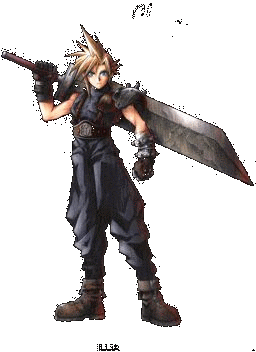

Salut
Fonctionne pour le Final Fantasy 7 pal original et pour les cds de sauvegardes.
(essayé avec Game hunter V8.0 cd version /2000 sur Ps1 ) (action replay qui se branche deriere la PS1 et fait passer les cd de sauvegarde appellé aussi backup, par swap )

Le code 60 hz je l'ai trouvé sur Jeuxvideo.com, le code y-fix je l'ai trouvé par moi même en m'aidant de ces sites : www.Cfccar.com ainsi qu'à l'aide du site Codemaster-project et du programme Ps2dis .
8005154C-0000 (60 hz ntsc)
800444D8-0000 (recentrage vers le haut y-fix)
Je suis sûr que c´est bien du 60 hz (donc jeux plus dynamique, plus rapide) car j´ai chronométré le temps que l´on met pour faire le tracer des montagnes russes au Gold Saucer en 50 et 60 hz
video de FF7 en 50 hz (combat dans le reacteur de midgar)
video de FF7 en 60 hz (combat dans le reacteur de midgar)
50 hz environ 4 min
60 hz environ 3 min 15 sec
Le jeux s'affiche en pleine ecran (plus de personnage ecrasé, plus de bande noire)
Affichage Ntsc , donc il faut soit avoir son televiseur compatible Ntsc soit passer par la prise peritel (Scart) en RGB (ou RVB ), sinon ça sera en noir et blanc.
L´ecran et presque parfaitement centrer dans sa verticalité. En revanche comme je suis obligé de passez par le rgb (qui est de toute façon de meilleur qualité ) j´ai toujours ce léger decalage sur la gauche, m´enfin ça, ça me la toujours fait quelque soit la console ( en l´abscence de centrage dans les options des jeux ou de la console.)
C'est à titre d'information que j'ai mis mon action replay, les codes devrait marcher sur tout les action replay Ce qui m'interesserai de savoir c'est si les codes marchent aussi sur un action replay Ps2.
Pour ceux qui n'ont pas d'action replay il peuvent se le graver
CD CodePatch
Personnellement je l'ai graver avec Nero en 1x, important, plus c'est lent mieux c'est.
Seulement pour le faire passer (puisqu´il sera graver)il faut :
-Soit avoir la ps1 pucé
-Soit avoir un game enhancer (ce que j´ai - non compatible avec la psone car pas de port parallele à l'arriere)
-Soit Swapper
Voila bon jeux
Le site sur les codes action replay pour les final fantasy - Maître du Site : MaidenCloud